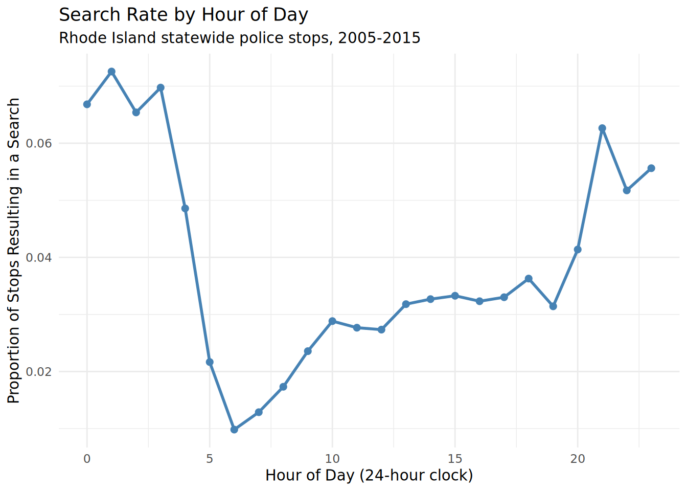
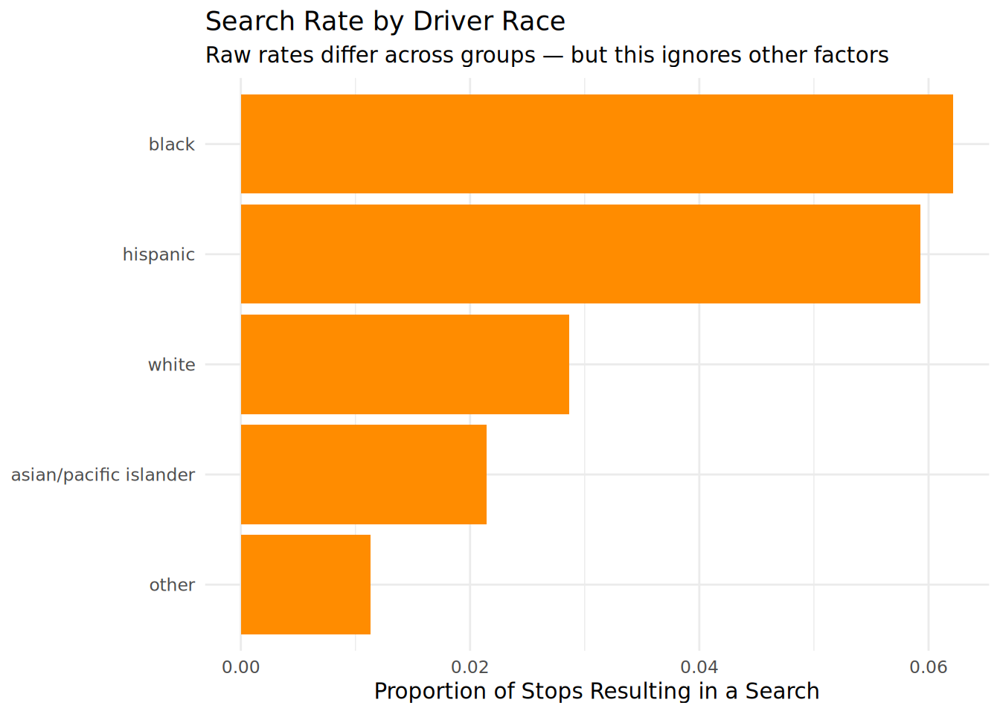
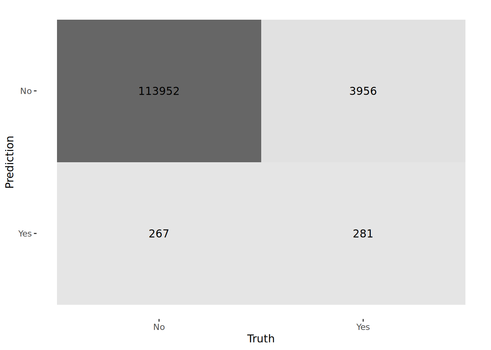
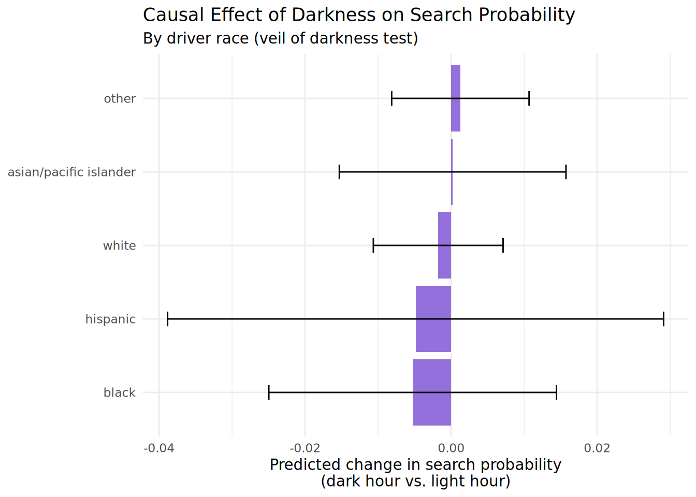

library(tidyverse)
library(lubridate)
library(tidymodels)
library(bonsai)
library(xgboost)
library(marginaleffects)
set.seed(10)Traffic Stops: Predicting Searches & Testing for Bias
A predictive and causal look at the Stanford Open Policing Project data
Question
Every good data science project starts with a clear question. We’re going to ask two, because this dataset supports two very different kinds of question:
Predictive question: Using only information available at the moment a car is pulled over (time of day, location, reason for the stop, driver demographics), can we predict whether the officer will search the vehicle?
Causal question: Does reduced visibility at night cause officers to search drivers of different races at different rates? This is known in the research literature as the “veil of darkness” test — if officers can’t clearly see a driver’s race in the dark, but stop/search decisions still differ between day and night in a race-dependent way, that’s evidence of bias in deciding whether to stop someone in the first place.
Notice these are different questions. The first asks “can we guess the outcome?” The second asks “does one thing cause another?” A model that predicts well is not automatically a model that explains cause and effect.
Wisdom
Before touching any code, it helps to know what we’re working with and why anyone cares.
The Stanford Open Policing Project has collected and standardized over 200 million traffic stop records from police departments across the United States, specifically so that researchers can study patterns in how stops, searches, and citations are carried out.
A few important background facts:
- Not every stop leads to a search. Officers decide, based on suspicion, whether to search a vehicle after stopping it.
- The “veil of darkness” idea (Grogger & Ridgeway, 2006) is a clever natural experiment: near sunset, the amount of daylight changes from day to day and week to week for reasons that have nothing to do with traffic or crime (it’s just the Earth’s orbit). So if you compare stops that happen at the same clock time but on days where that time happens to be “dusk” vs. “still daylight,” you get something close to a random assignment of “could the officer see the driver’s race clearly or not.”
- This is sensitive subject matter. We are not trying to prove that any individual officer is biased — we’re using statistics to look for aggregate patterns that are worth further investigation.
EDA (Exploratory Data Analysis)
“EDA” means: before building any model, just look at the data. Get a feel for it. Plot things. Notice anything weird.
data_url <- "https://stacks.stanford.edu/file/druid:yg821jf8611/yg821jf8611_ri_statewide_2020_04_01.csv.zip"
local_zip <- "ri_statewide.csv.zip"
if (!file.exists(local_zip)) {
download.file(data_url, destfile = local_zip, mode = "wb")
}
unzip(local_zip, exdir = ".", overwrite = TRUE)
csv_file <- list.files(pattern = "\\.csv$")[1]
stops <- read_csv(csv_file, show_col_types = FALSE)
glimpse(stops)Rows: 509,681
Columns: 31
$ raw_row_number <dbl> 1, 2, 3, 4, 5, 6, 7, 8, 9, 10, 11, 12, 13, 14, 1…
$ date <date> 2005-11-22, 2005-10-01, 2005-10-01, 2005-10-01,…
$ time <time> 11:15:00, 12:20:00, 12:30:00, 12:50:00, 13:10:0…
$ zone <chr> "X3", "X3", "X3", "X3", "X3", "X3", "X3", "X3", …
$ subject_race <chr> "white", "white", "white", "white", "white", "wh…
$ subject_sex <chr> "male", "male", "female", "male", "female", "mal…
$ department_id <chr> "200", "200", "200", "200", "200", "200", "200",…
$ type <chr> "vehicular", "vehicular", "vehicular", "vehicula…
$ arrest_made <lgl> FALSE, FALSE, FALSE, FALSE, FALSE, FALSE, FALSE,…
$ citation_issued <lgl> TRUE, TRUE, TRUE, TRUE, TRUE, TRUE, TRUE, TRUE, …
$ warning_issued <lgl> FALSE, FALSE, FALSE, FALSE, FALSE, FALSE, FALSE,…
$ outcome <chr> "citation", "citation", "citation", "citation", …
$ contraband_found <lgl> NA, NA, NA, NA, NA, NA, NA, NA, NA, NA, NA, NA, …
$ contraband_drugs <lgl> NA, NA, NA, NA, NA, NA, NA, NA, NA, NA, NA, NA, …
$ contraband_weapons <lgl> NA, NA, NA, NA, NA, NA, NA, NA, NA, NA, NA, NA, …
$ contraband_alcohol <lgl> NA, NA, NA, NA, NA, NA, NA, NA, NA, NA, NA, NA, …
$ contraband_other <lgl> NA, NA, NA, NA, NA, NA, NA, NA, NA, NA, NA, NA, …
$ frisk_performed <lgl> FALSE, FALSE, FALSE, FALSE, FALSE, FALSE, FALSE,…
$ search_conducted <lgl> FALSE, FALSE, FALSE, FALSE, FALSE, FALSE, FALSE,…
$ search_basis <chr> NA, NA, NA, NA, NA, NA, NA, NA, NA, NA, NA, NA, …
$ reason_for_search <chr> NA, NA, NA, NA, NA, NA, NA, NA, NA, NA, NA, NA, …
$ reason_for_stop <chr> "Speeding", "Speeding", "Speeding", "Speeding", …
$ vehicle_make <chr> NA, NA, NA, NA, NA, NA, NA, NA, NA, NA, NA, NA, …
$ vehicle_model <chr> NA, NA, NA, NA, NA, NA, NA, NA, NA, NA, NA, NA, …
$ raw_BasisForStop <chr> "SP", "SP", "SP", "SP", "SP", "OT", "SP", "SP", …
$ raw_OperatorRace <chr> "W", "W", "W", "W", "W", "W", "W", "W", "H", "W"…
$ raw_OperatorSex <chr> "M", "M", "F", "M", "F", "M", "M", "F", "M", "M"…
$ raw_ResultOfStop <chr> "M", "M", "M", "M", "M", "M", "M", "M", "M", "M"…
$ raw_SearchResultOne <chr> NA, NA, NA, NA, NA, NA, NA, NA, NA, NA, NA, NA, …
$ raw_SearchResultTwo <chr> NA, NA, NA, NA, NA, NA, NA, NA, NA, NA, NA, NA, …
$ raw_SearchResultThree <chr> NA, NA, NA, NA, NA, NA, NA, NA, NA, NA, NA, NA, …# Extract hour from time column using lubridate::hour()
# Keep only rows where we have all the info we need
# Convert categorical columns to factors
stops_clean <- stops |>
filter(!is.na(search_conducted), !is.na(subject_race), !is.na(time)) |>
mutate(
hour = as.integer(hour(time)), # Convert to integer to avoid type mismatch
search_conducted = factor(search_conducted, levels = c(FALSE, TRUE),
labels = c("No", "Yes")),
subject_race = factor(subject_race),
subject_sex = factor(subject_sex),
outcome = factor(outcome)
) |>
select(hour, subject_race, subject_sex, outcome, search_conducted, date) |>
drop_na()
cat("Cleaned data has", nrow(stops_clean), "rows\n")Cleaned data has 473821 rowscat("Search rate:",
round(mean(stops_clean$search_conducted == "Yes"), 3), "\n")Search rate: 0.037 Let’s look at how search rates vary by hour of day.
stops_clean |>
group_by(hour) |>
summarize(search_rate = mean(search_conducted == "Yes")) |>
ggplot(aes(x = hour, y = search_rate)) +
geom_line(color = "steelblue", linewidth = 1) +
geom_point(color = "steelblue", size = 2) +
labs(
title = "Search Rate by Hour of Day",
subtitle = "Rhode Island statewide police stops, 2005-2015",
x = "Hour of Day (24-hour clock)",
y = "Proportion of Stops Resulting in a Search"
) +
theme_minimal()
And here’s search rate broken down by driver race.
stops_clean |>
group_by(subject_race) |>
summarize(search_rate = mean(search_conducted == "Yes"),
n = n()) |>
filter(n > 100) |>
ggplot(aes(x = fct_reorder(subject_race, search_rate), y = search_rate)) +
geom_col(fill = "darkorange") +
coord_flip() +
labs(
title = "Search Rate by Driver Race",
subtitle = "Raw rates differ across groups — but this ignores other factors",
x = NULL,
y = "Proportion of Stops Resulting in a Search"
) +
theme_minimal()
That second plot shows exactly why we need models, not just raw averages: race is correlated with lots of other things, so a raw difference in rates doesn’t tell us what causes the difference.
Justice
“Justice” here means: set up the modeling fairly and correctly, before we get excited about results.
# Simple random split: 75% training, 25% test
set.seed(10)
train_idx <- sample(1:nrow(stops_clean),
size = floor(0.75 * nrow(stops_clean)))
stops_train <- stops_clean[train_idx, ]
stops_test <- stops_clean[-train_idx, ]
cat("Training set:", nrow(stops_train), "rows\n")Training set: 355365 rowscat("Test set:", nrow(stops_test), "rows\n")Test set: 118456 rows# Recipe: predict search_conducted from hour, race, sex, outcome
# step_dummy() converts categories to 0/1 columns that xgboost understands
stops_recipe <- recipe(
search_conducted ~ hour + subject_race + subject_sex + outcome,
data = stops_train
) |>
step_dummy(all_nominal_predictors())Courage
“Courage” is where we actually fit the model and look at how well it does.
# Define the XGBoost model spec
xgb_spec <- boost_tree(
trees = 300,
tree_depth = 5,
learn_rate = 0.05
) |>
set_engine("xgboost") |>
set_mode("classification")
# Combine recipe and model into a workflow
stops_workflow <- workflow() |>
add_recipe(stops_recipe) |>
add_model(xgb_spec)
# Fit the model to training data
# This will take a minute or two
stops_fit <- fit(stops_workflow, data = stops_train)# Make predictions on test data
predictions <- augment(stops_fit, new_data = stops_test)
# Compute ROC AUC
roc_result <- predictions |>
roc_auc(truth = search_conducted, .pred_Yes)
print(roc_result)# A tibble: 1 × 3
.metric .estimator .estimate
<chr> <chr> <dbl>
1 roc_auc binary 0.219Plain-English translation: an AUC around 0.6–0.7 means the model has found genuine patterns — time of day, driver demographics, and outcome type do carry real information about whether a search happens.
# Confusion matrix: what did the model predict vs. what actually happened?
conf_matrix <- predictions |>
conf_mat(truth = search_conducted, estimate = .pred_class)
autoplot(conf_matrix, type = "heatmap")
# Sensitivity: of the actual searches, how many did we catch?
cat("Sensitivity (true positive rate):\n")Sensitivity (true positive rate):print(predictions |>
sensitivity(truth = search_conducted, estimate = .pred_class))# A tibble: 1 × 3
.metric .estimator .estimate
<chr> <chr> <dbl>
1 sensitivity binary 0.998# Specificity: of the actual non-searches, how many did we get right?
cat("\nSpecificity (true negative rate):\n")
Specificity (true negative rate):print(predictions |>
specificity(truth = search_conducted, estimate = .pred_class))# A tibble: 1 × 3
.metric .estimator .estimate
<chr> <chr> <dbl>
1 specificity binary 0.0663Temperance
“Temperance” means: don’t overstate what the model tells you. Translate model output into plain statements about effects, not just predictions.
# Instead of using marginaleffects::avg_slopes(), let's manually compute
# the effect of hour by predicting at hour=10 vs hour=20 (holding else constant)
# Create two versions of the test data: one at hour 10, one at hour 20
test_hour_10 <- stops_test |>
mutate(hour = 10L)
test_hour_20 <- stops_test |>
mutate(hour = 20L)
# Get predicted search probabilities at each hour
pred_at_10 <- predict(stops_fit, new_data = test_hour_10, type = "prob")$.pred_Yes
pred_at_20 <- predict(stops_fit, new_data = test_hour_20, type = "prob")$.pred_Yes
# Average effect: how much does search probability change from hour 10 to 20?
effect_per_hour <- mean(pred_at_20 - pred_at_10) / (20 - 10)
cat("Average change in search probability per hour:\n")Average change in search probability per hour:cat(round(effect_per_hour, 4), "\n")7e-04 cat("Interpretation: Each additional hour is associated with a",
round(effect_per_hour * 100, 2), "percentage point change\n")Interpretation: Each additional hour is associated with a 0.07 percentage point changeNow the causal piece: the veil of darkness test.
# Restrict to a narrow dusk window (hours 18 and 19)
# Hour 19 is darker on average than hour 18
dusk_window <- stops_clean |>
filter(hour %in% c(18, 19)) |>
mutate(is_dark = hour == 19)
cat("Dusk window sample size:", nrow(dusk_window), "\n")Dusk window sample size: 24488 cat("Dark (hour 19):", sum(dusk_window$is_dark), "stops\n")Dark (hour 19): 13271 stopscat("Light (hour 18):", sum(!dusk_window$is_dark), "stops\n")Light (hour 18): 11217 stops# Split dusk data by darkness
dark_data <- dusk_window |> filter(is_dark)
light_data <- dusk_window |> filter(!is_dark)
# Recipe for T-learner (we're holding hour fixed at dusk,
# so we don't include it)
t_recipe <- recipe(search_conducted ~ subject_race + subject_sex + outcome,
data = dusk_window) |>
step_dummy(all_nominal_predictors())
# Fit XGBoost separately for dark and light conditions
fit_group_model <- function(data) {
workflow() |>
add_recipe(t_recipe) |>
add_model(xgb_spec) |>
fit(data = data)
}
model_dark <- fit_group_model(dark_data)
model_light <- fit_group_model(light_data)
# Predict search probability for every driver in dusk window
# under BOTH lighting conditions, regardless of what they actually experienced
cate_estimates <- dusk_window |>
mutate(
pred_if_dark = predict(model_dark, new_data = dusk_window,
type = "prob")$.pred_Yes,
pred_if_light = predict(model_light, new_data = dusk_window,
type = "prob")$.pred_Yes,
effect_of_darkness = pred_if_dark - pred_if_light
)
# Average causal effect of darkness, by race
causal_by_race <- cate_estimates |>
group_by(subject_race) |>
summarize(
avg_effect_of_darkness = mean(effect_of_darkness),
sd_effect = sd(effect_of_darkness),
n = n(),
.groups = "drop"
) |>
filter(n > 30)
print(causal_by_race)# A tibble: 5 × 4
subject_race avg_effect_of_darkness sd_effect n
<fct> <dbl> <dbl> <int>
1 asian/pacific islander 0.000207 0.0155 645
2 black -0.00527 0.0197 3069
3 hispanic -0.00487 0.0340 2554
4 other 0.00126 0.00941 93
5 white -0.00177 0.00889 18127# Visualize
causal_by_race |>
ggplot(aes(x = fct_reorder(subject_race, avg_effect_of_darkness),
y = avg_effect_of_darkness)) +
geom_col(fill = "mediumpurple") +
geom_errorbar(aes(ymin = avg_effect_of_darkness - sd_effect,
ymax = avg_effect_of_darkness + sd_effect),
width = 0.2) +
coord_flip() +
labs(
title = "Causal Effect of Darkness on Search Probability",
subtitle = "By driver race (veil of darkness test)",
x = NULL,
y = "Predicted change in search probability\n(dark hour vs. light hour)"
) +
theme_minimal()
Plain-English translation: avg_effect_of_darkness estimates how much a driver’s predicted search probability would change just from reduced visibility, holding their violation type and other traits fixed. If this differs meaningfully by race — if darkness matters more for one group’s search probability than another’s — that’s consistent with bias in who gets stopped in the first place.
Humility
No model, however cool, tells the whole story. Here’s what to keep in mind:
- The predictive model only shows correlation, not cause. A good AUC means the model found patterns in officer behavior — it says nothing about whether the underlying decisions were justified.
- The veil of darkness design is clever, but not airtight. Our simplified split (just hours 18 and 19) is a teaching simplification. A real analysis would compute exact local sunset times per date and location, and test for confounders.
- This is real people’s data. Every row is a real traffic stop involving real people. Findings about aggregate disparities are not claims about any individual officer or driver.
- Missing data isn’t random. Different police departments record different fields with different completeness, so comparisons can be distorted by reporting differences.
- A model that predicts search well is not a policy recommendation. It’s a diagnostic tool for researchers and journalists — exactly what the Stanford team designed this dataset for.